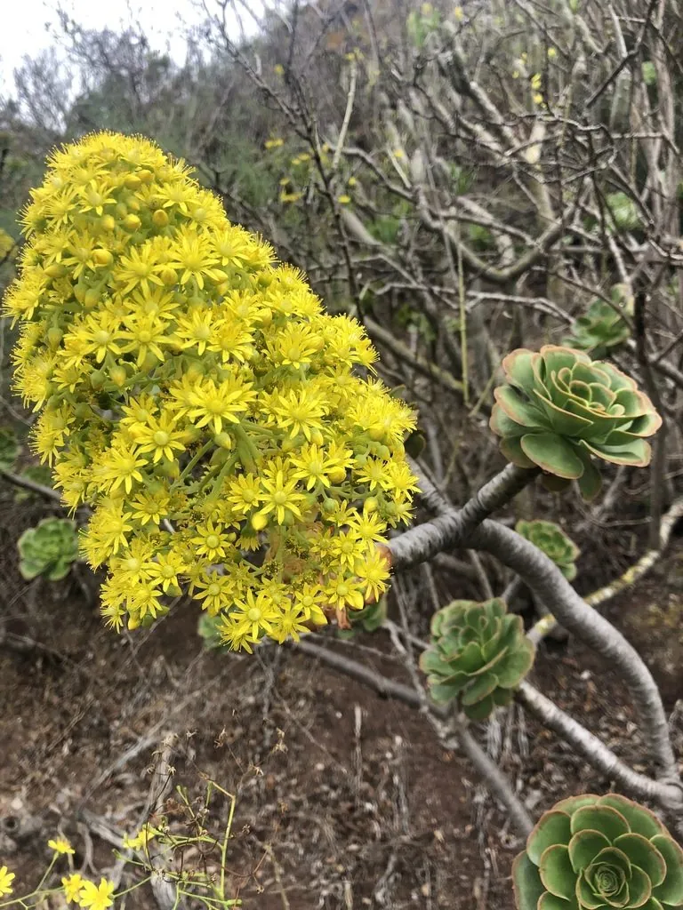

多肉植物 · 植物界
黑法师 Aeonium arboreum

景天科莲花掌属多肉，直立茎顶生紫黑色莲座叶，如黑色玫瑰，夏季休眠，原产加那利群岛，是深色系多肉的代表。
- 分类
- 门被子植物门纲木兰纲目虎耳草目科景天科属莲花掌属
- 栖息环境
- 加那利群岛的火山坡地与灌丛，喜温暖、阳光充足
- 地理分布
- 原产加那利群岛，世界各地盆栽栽培
- 保护级别
- 暂无评估
物种志
黑法师为景天科莲花掌属多肉植物，茎直立、多分枝，高 0.5–1.5 米。叶片匙形，长 5–10 厘米，肉质，螺旋排列成莲座状，叶色紫黑或深紫红，表面有光泽，叶缘有细齿。花黄色，星形，春季开放，花序自莲座中心抽出；开花后该枝条往往逐渐枯萎死亡。
黑法师原产非洲西北部的加那利群岛，喜温暖、阳光充足和通风良好的环境，耐旱怕积水，夏季高温时叶片收拢、进入休眠状态。它叶色深紫，是因为叶片富含花青素，光照越足、温差越大，颜色越黑亮；夏季遮阴或浇水过多时，叶心会变绿、徒长。栽培以疏松的颗粒土为主，夏季休眠期要严格控水，并注意避免暴雨后暴晒。
形态与习性
- 株高0.5–1.5 米，茎直立多分枝
- 花期春季，花黄色星形，自莲座中心抽出
- 果期花后结蓇葖果
- 光照喜充足阳光，夏季需遮阴
- 水分耐旱，夏季休眠期严格控水
- 土壤疏松透气、排水良好的颗粒土
- 繁殖以枝插为主，也可叶插
趣味知识
- 黑法师的紫黑色叶片富含花青素，光照越足、温差越大颜色越深。
- 夏季高温时叶片会收拢成杯状进入休眠，此时应减少浇水。
- 开花后该枝条往往逐渐枯萎，园艺上常剪除花葶以保持株形。
- 它原产加那利群岛，同属的“山地玫瑰”也因莲座造型而闻名。